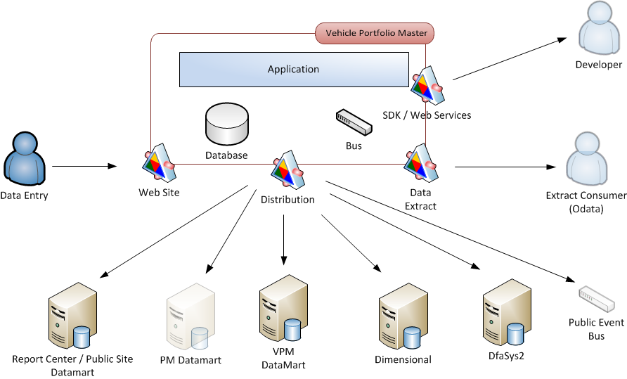

Vehicle / Portfolio Data
(Benchmark Data Too)
Agenda
Problem
Solution
Proposed Work Plan
Technical Approach
Problems
Properties Spread Out in Various Systems
Separated by systems AND by teams
Divergent Change
Tribal Knowledge
Hard to Reason About the System
Solutions
Service Oriented Architecture
It logically represents a business activity with a specified outcome.
It is self-contained.
It is a black box for its consumers.
It may consist of other underlying services.
Place Vehicles, Portfolios, and Benchmarks in the same system.
VPM with SOA

Long Term Vision : 5 - 6 Years
This is NOT a rewrite.
Collective Code Ownership
Limits Divergent Change
Anyone Can Change the System
Central Place for Data Governance
Source Control to ID Owners
Ownership
IAD - Valid Business Rules, Data Governance
I/T - 4 Nines, Technical Stability / Risk
Data Mart Strategy
DataMarts for SQL Users
Customized by Customer
Legacy systems become data marts.
Data Extract Strategy
Make the Extracts more Useful than Legacy Systems
Hands the Business the Answer
Can Schedule Extracts
OData with Office 2016
Proposed Work Plan
Mature Software Engineering Discipline
Mature SE - Collective Code Ownership
Branching Strategy - Done
Code Reviews - Done
Mature SE - Automated Deployment
Database Build Process
Continuous Integration
One Click Deployment
Training for Database Build Process
Mature SE - Automated Testing
UI Testing - Done
Add Infrastructure Automated Tests
Decouple from DB - Tech Debt
Training for Automated Testing
Make DS2A readonly
Benchmarks
Portfolio to Benchmarks
Portfolio
Champion Collective Code Ownership
Transition to SOA Tools
Refactor Approval System
Support Events